Hola Colombia! Es un gusto estar aca, voy a comenzar rapidamente mostrandoles algunas noticias recientes. Para invitarlos a reflexionar.
Service is down
Creo que todos algunas vez nos vimos afectados por una de estas fallas en algun momento.
Tragedy of the commons
üé•
- ver link: https://es.wikipedia.org/wiki/Tragedia_de_los_comunes
La tragedia de los bienes comunes se refiere a una vieja teoria que desgraciadamente sigue estando en uso digamos. Que implicitamente se usa para justificar el quitarle control de un bien comun, como el amazonas, a la gente, a sus pobladores nativos a sus comunidades, para entregaserlo a un privado.
Elinor Ostrom, ganadora del nobel en economia en 2009 critico esta teoria. Demostrando todo lo contrario.
real life
Pero no necesitamos ser tan tragicos tampoco. Por ejemplo, un hobie que me fascina es escalar. Comence hace poco y es una actividad que quiero seguir practicando por mucho tiempo. Estas en contacto con la naturaleza, es genial pero tambien puede ser peligroso. Mortalmente peligroso.
Por suerte, hay muchos mecanismos de seguridad y nos ensenan a usarlos desde el primer momento.

real life
Siempre hay redundancia (concepto q estamos familiarizados) en los mecanismos de seguridad. Cada una de las flechas en este caso senala un punto de anclaje, esto quiere decir que si me caigo quedo colgando del ultimo punto. Una pequeña caida y puedo seguir, nada grave.

real life ☠️
Pero que sucede si uso solo un punto de anclaje. Esto incrementa el riesgo. Ahora si me caigo todo depende de un solo seguro y si ese seguro falla, puede ser el final.
Esto parece un single point of failure...
CENTRALIZATION ISSUES
Todos estos ejemplos tienen un factor comun, centralizacion como un problema.
Ahora bien, que podemos hacer nosotros programadores para cambiar esto? Porque sepan que tenemos un rol en todo esto.
Si tan solo hubiera otra manera de hacer las cosas...
Building Up
on Dat
Bienvenidos a "Building Up on Dat."
En esta charla vamos a ver como Dat nos puede ayudar a desarrollar nuevos tipos de aplicaciones decentralizadas.
v1 - Jun 2019 - NodeConf Colombia
Diego üëã
aka: deka, dk, dɛkɑ
GEUT is a young but solid company looking forward to create new apps that led us to new ways of interaction. We are doing some good work these days on the decentralized space.
---
Sobre el speaker, mi nombre es Diego, tambien me conocen como deka. Soy co-founder de GEUT, una empresa joven pero solida, donde estamos desarrollando nuevos tipos de aplicaciones que habiliten nuevas formas de interactuar. Por eso nos interesa el espacio P2P.
Otra cosa que puedo contarles sobre mi, es que en diciembre, intercambiando unos correos surgio la idea de armar un comm-comm para Dat. Esto es un espacio semanal donde podemos aumentar la conversación sobre todo el ecosistema de dat, nuevos modulos, nuevas ideas, todos bienvenidos a este espacio semanal
Super quick intro to Dat
So let's get into Dat, let's see super quickly what it is, the most important parts and some code examples. Finally we'll talk a bit about what's next?!
- Dat is a community-driven project
- Dat is also a powerful decentralized data sharing tool
---
Bueno, vamos a empezar a conocer Dat.
Dat is a
community-driven project
@okdistribute
*
@mafintosh
*
@joeahand
*
@rangermauve
*
@tinchoz49
* ...
Dat es un proyecto impulsado por la comunidad. Esto quiere decir que hay comites abiertos donde distintos desarrolladores y desarrolladoras invierten tiempo en el proyecto colaboran y por supuesto tienen lugar en decidir el futuro del mismo. Es una organización abierta y eso es importante.
Community matters.
Dat is also a powerful decentralized data sharing toolüõ†
Pero no es solo eso claro, Dat es una poderosa herramienta para compartir datos de forma decentralizada.
Veamos Dat de un vistazo, estos son algunos de los componentes importantes de los que quiero hablarles en esta charla.
Todo empieza con Feeds y un sistema de replicación.
Pensemos en los feeds como una lista y en la replicacion como una sincronizacion
Otro componente importante de Dat es el dat link. Es como una url pero con otras habilidades.
Public Key üîë
Discovery Key üß≠
Un dat link es una clave publica y una clave de descubrimiento.
con la clave publica vamos a poder leer y firmar el contenido, bueno esto ultimo solo el writer. Dat nos brinda encriptación en el medio.
Con la discovery key, dat tiene una forma segura de buscar a otros peers que esten compartiendo el mismo contenido. Es una porcion de la public key.
Let's go deeper
append-only log →
hypercore
Recuerdan que venimos hablando de feeds, bueno Hypercore es el modulo que representa al feed. Y es un componente fundamental de Dat. Tiene las siguientes caracteristicas
a Feed
- simple data structure
- immutable
- logical order
- easy to index → efficient data sharing
A pesar de ser un modulo de bajo nivel, es simple de visualizar, podemos pensar en hypercore como un una lista o un log. Esta lista es inmutable y facil de indexar, esto permite que dat sea eficiente cuando mergea o detecta cambios en grandes volumenes de datos, puede resolverlo en tiempo logaritmico.
swarm
network of peers with a common interest
Otro concepto importante es el swarm. Pensemos en un swarm como una red de pares conectados con un interes en comun.
Discovery
Pero como me uno a un swarm? Bueno a traves de algun mecanismo de descubrimiento.
Local network
mDNS
Internet
DHTs
Dat funciona tant en redes locales usando multicaste para descubrir peers como en redes de gran escala como internet, usando dht lo mismo que usa bittorent.
TCP/UTP →
WebRTC/ws →
Replication Process
As we've seen in Dat like in Node, everything is about streams.
The replication process describes how to peers will share their feeds. Streams are a powerful interface for sharing almost anything. By the use of streams, dat is capable of syncronizing others feeds peers.
---
Como sabemos en node, todo en algun momento termina en streams. El proceso de replicacion no es la excepcion. Cada feed es un stream, cuando la replicacion ocurre los datos se sincronizan entre los feeds.
Como se ve esto?

The process of replication looks like this. I mean, you will see this or somethin similar almost everywhere in the Dat ecosystem, its like a pattern.
---
Asi, esto es casi un patron en el mundo de dat, si se ponen a mirar el codigo van a ver esto mas de una vez.
Me descargo el Feed remoto, q obtuvimos a traves de una PK, luego le agrego mis datos y finalmente lo vuelvo a enviar al remoto, terminando asi la sincronizacion.
Fundamental Blocks
Bien ahora que tenemos un panoramoa de como funciona dat, veamos cuales son los modules que podemos usar para construir nuestras aplicaciones decentralizadas.
hyperdrive
El primero de estos modulos es hyperdrive.
FS abstraction for Dat üëç
hyperdrive makes things super easier to work with by giving us a notion of working with a FS
___
Hyperdrive nos da algo clave, una abstraccion tipo FS de dat. Es decir, nos deja interactuar con dat como si usaramos cualquier FS.
La API es similar de node. Tenemos readfile, write, readStream. Algo con lo que podemos estar familiarizados.
2 feeds
Recuerdan el concepto de feed de hypercore? Bueno en dat compartimos usualmente 2 feeds.
metadata feed
eg: names, sizes, pointers to content
Un feed de metadata, con info como nombres, stats, sizes y punteros al contenido
content feed
actual file contents
Y otro feed con el contenido. Esto es por ej, distinto a git. Donde metadata y contenido estan juntas. Esto nos permite descargar la metadata por separado y solo acceder al contenido que nos interesa sin bajar todo.
dat-js
Otro modulo importante es dat-js
Dat API for the browser.
Handles swarm connection and storage
Podemos pensarlo como una API de Dat para el browser. Se encarga de manejar la conexion al swarm y el storage eficient en el sandbox del browser.
Input: dat link
Output: hyperdrive
Es muy simple de usar, le pasamos un dat link, sino genera uno. Y el resultado es un hyperdrive
v8 improvements:
La ultima version de dat-js es la 8. Y trae muchas mejoras. No solo en velocidad sino tambien en como almacena la información, antes solo usaba indexdb y ahora admite storages como la chrome file api.
Tambien entre las mejoras se agrega un gateway que se conecta con un bridge websocket con nuestra app y esto posibilita conectarnos con dats fuera de la red webrtc.
Demo:
dat-viewer
code
Llego el momento del primer demo. Esta es una app que arme usando dat-js y react. Se llama datviewer y se ve asi. Podemos cargar un dat e inspeccionarlo, como les contaba antes, estamos usando solamente el metadata feed por lo tanto no descargamos nada.
dat-node
Dat-node! Bueno, la abstraccion de dat para node.
dat-cli, dat-desktop
Algunas apps que lo usan son el dat cli y el dat desktop
- swarm connection → discovery-swarm
- storage → dat-storage
- returns hyperdrive
Como pueden ver es muy similar a dat-js. Se encarga de la conexion al swarm, el almacenamiento de los dats y nos retorna un hyperdrive que podemos usar.
Demo:
gpm
code
El 2do demo que les prepare, esta vez usando dat-node. Este demo fue muy divertido de hacer. La idea es hacer nuestro propio package manager, como npm, pero se llama gpm y usa dat. Obviamente esto es un juguete.
Como la demo involucra muchas partes, en geut armamos un video para verlo en accion. veamos. PLAY VIDEO. Pero uds pueden clonar el repo y usarlo.
1. creamos un registry en un directorio.
2. lanzamos un daemon, este daemon usa la pk del registry y podemos pensarlo como un super seed, es decir nos permite estar compartiendo nuestro directorio de modulos todo el tiempo.
3. Vamos a simular un publish, porque nuestro registro no tiene nada. Para eso, vamos a subir nuestro modulo, elegimos uno al azar, se llama left-pad capaz q lo conozcan :D. Bien, newdep es el comando para subirlo, boom. Esta arriba.
4. Ahora vamos a consumir este modulo desde otro proyecto, aca vemos que al correr el proyecto falta una dependencia, que es left pad, vamos a instalarlo. gpm install... GENIAL.
5. Por ahora nada nuevo... pero que pasa si se cae el registro...? No podemos instalar nada mas...El caos, el horror.
6. En este momento que tal si otro colega quiere seguir trabajando, en su proyecto tambien necesita left-pad, pero el registro esta caido... Sin embargo el install funciona. Porque estamos usando dat para descargar el modulo. EXCELENTE
Este grafico muestra un poco como esta armado gpm. cuando descargamos lo hacemos desde hyperdrive, este FS decentralizado. Y cuando subimos, usando una api rest. esto puede verse como un servicio centralizado y era la idea de la demo. Tambien es una limitante de dat, porque no tenemos Multiwriter por ahora en el core. Es decir que solo puede escribir en un dat el creador el resto escuchamos cambios.
Multiwriter Demo:
Caracara
hyperdb + automerge
Read more
Pero es posible escribir aplicaciones multiwriter en dat HOY. Usando librerias como hyperdb o kappa. EN este caso tengo otra demo que usa hyperdb junto a automerge, automerge es un modulo que maneja CRDTs o estructuras de datos libres de conflictos, piensenlas como cuando tenemos que hacer un git merge pero no tienen que preguntarle a nadie como mezclar.
Esta demo que arme es un editor colaborativo y se llama caracara
Local-first Apps
Ok, con todo esto que aprendimos estamos en condiciones de crear un nuevo tipo de app, que se llaman local-first apps.
ink and switch acuno el termino y en el link pueden ver todo el research pero me gustaria resumirlo asi.
- ink and switch coined the term here:
software that enables both collaboration and ownership for users
2 types of apps
En contexto ellos describen 2 tipos de apps
Old fashioned apps ü•É
old fashioned apps, como las que usabamos en los 90s, monitores grandes, teclados grandes, internet no era mainstream y los datos estaban todos en nuestros dispositivos.
Cloud apps ☁️
Ahora en cambio usamos cloud apps o web apps, estas apps potencian la colaboracion, eso es genial pero sin internet muchas no veces no podemos acceder a nuestros datos.
7 principles
-
No spinners
-
Cross-device sync
Your data won't live on a single device
-
Network is optional
No internet required. Also we can make use of local networks (ie: mdns, bt)
-
Seamless collaboration
Excellent collaboration mechanisms is a must to have. Real-time.
-
The long now
Data preservation through the years, ie: you can continue accessing the data for a long time in the future
-
Security and privacy by default
Make use of local encryption + end-to-end encryption
-
You retain ultimate control
eg: being physically able to copy some data from one place to another
Local-first apps busca obtener lo mejor de estos dos mundos, colaboración de primer nivel y devolver la posesion de los datos al usuario.
What's next?
Estamos llegando al final pero antes queria contarles que es lo que se viene en Dat.
- Dat-SDK va a ser la nueva api de alto nivel para desarrollar apps dat. dat-js y dat-node van a seguir existiendo pero el soporte oficial va a pasar al sdk. En 1 mes -veremos la primer version del sdk y podremos empezar a probarlo.
- hyperdrive v10, vimos q hyperdrive es super importante la v10 posibilita el soporte a multiwriter y muchas mejoras de eficiencia.
- Beaker nos trae el unwalled garden una api para desarrollar apps sociales en el mundo p2p.
Asi se ve la relacion entre los modulos que vimos en la charla y los nuevos.
So far...
En resumen...
Centralization Issues
- Single point of failure
- Losing control of data ownership
- Lack of Privacy
Estamos encontrando estos problemas con mas frecuencia.
Dat achievements
- Solid progress
- Local-first apps
- Genuine interest on a better DX → better ecosystem
- Exciting times ✨
Por otra parte, dat es un proyecto con un crecimiento solido impulsado por la comunidad. Hay un interes genuino en mejorar la dx, esto va a posibilitar un mejor ecosistema de apps.
Creo que son tiempos mas que interesantes para sumarse al proyecto Dat.
Conclusion
Los ultimos años la tendencia fue llevar todo a la nube. Centralizamos. Y eso facilito muchas cosas pero tambien trajo problemas, algunos servicios de los que todos dependemos estan en crisis, otros han violado nuestra privacidad. Todo esto ocurre en un ecosistema donde no sabemos como generar un modelo de crecimiento sustentable que satisfaga el open source y al mundo corporativo. Tenemos muchas dudas, pero con lo que vimos hoy al menos una certeza, con el modelo centralizado ya estamos encontrando limites. Tambien sabemos que hay otro mundo decentralizado, que esta ahi para explorarlo, que no conocemos sus limites, nunca le dimos una oportunidad y este parece ser un buen momento para hacerlo. La tecnologia esta avanzando y nosotros tenemos un papel. Qué camino vas a elegir?
Follow @DTNconf
üòâ